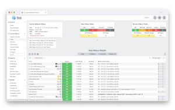

OMD - Open Monitoring Distribution
Version: 5.10-labs-editionThis page gives you a central view on the available GUIs in OMD. Just have a look and feel free to choose your favorite GUI. At the bottom of this page you can find short instructions on how to change the default GUI of OMD.
Thruk Monitoring Webinterface
Thruk is a complete rework of the classic interface. It is designed for large installations and can handle multiple sites. SLA Reporting is included as well as comprehensive Dashboards.
PNP4Nagios
PNP is an addon to Nagios which analyzes performance data provided by plugins and stores them automatically into RRD-databases (Round Robin Databases, see RRDTool).Grafana
Grafana is an open source metric analytics & visualization suite. It is most commonly used for visualizing time series data from InfluxDBDokuWiki
DokuWiki is a standards compliant, simple to use Wiki, mainly aimed at creating documentation of any kind.You can replace this page by logging into your sites system account and execute the commands:
omd stop omd configThen browse to "Web Gui -> DEFAULT_GUI" entry in the list and hit enter. Select the default GUI and quit all dialogs. After that start your site again by executing:
omd start